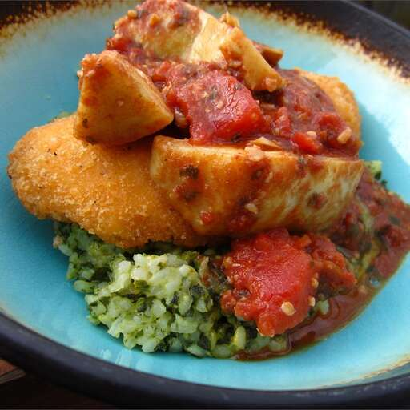

Chicken is browned, and then cooked with artichoke hearts, tomatoes, and sun-dried tomato pesto in this simple, elegant recipe.
Season both sides of chicken breasts with salt and pepper. Heat oil in a large skillet over medium-high heat. Place chicken in skillet; cook, turning once to brown each side. Remove chicken from pan, and set aside.
Pour tomatoes into pan; cook for 1 minute, stirring constantly, and incorporating any brown bits from bottom of pan. Stir in pesto and artichokes, and return chicken to pan. Cover, and reduce heat to medium. Simmer for 5 to 10 minutes, or until chicken is cooked through.